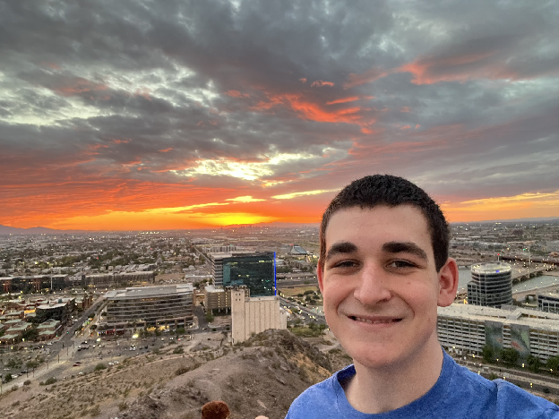

High school mini-series
Performed as an actor in a mini-series made for my high school TV class.
Watch the mini-seriesFilm student · Ithaca, NY
A freshman film student at Ithaca College, learning the craft of telling stories on screen. I’m working toward a future behind the camera as a director.

01 Selected experience
Learning by doing, collaborating, and showing up wherever a production needs me.
Performed as an actor in a mini-series made for my high school TV class.
Watch the mini-seriesProduced the school’s morning announcements, hosted on some days, and helped wherever needed.
Helped build sets for school musicals and moved pieces on stage during performances.
02 A little about me
I’m from South Jersey, near Philadelphia, and now study film at Ithaca College. I’m a kind, hardworking person who can be quiet at first—but I’m always up for a long conversation.
Movies are my biggest interest, and I also love theme parks and hiking. I swam and played soccer when I was younger; these days, I’m focused on the work that goes into making a film.
What I bring to a production
01Different editing software
02Lighting a shot
03Camera controls
Open to summer opportunities
If you’re looking for a hardworking film student who’s ready to learn and contribute, I’d love to hear from you.
sdenick@ithaca.edu